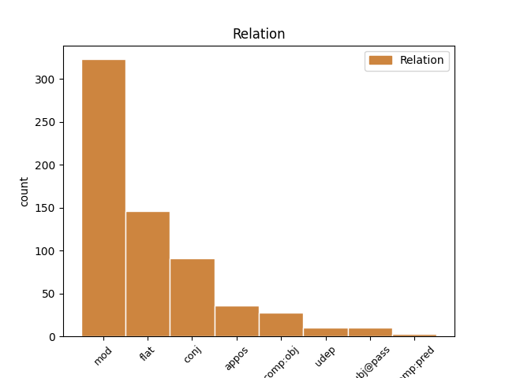
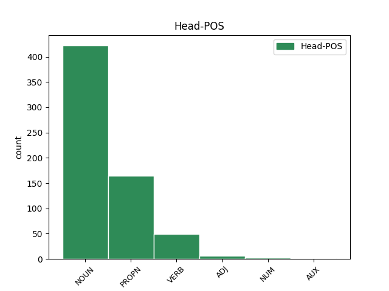
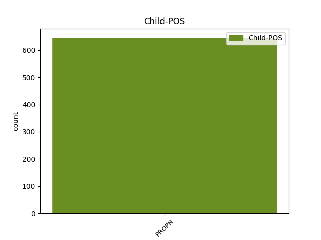

Distribution of features within this leaf



Agreement Rules sorted by frequency.
- When the dependent token is the modifer(mod) of the head token, and the dependent token is PROPN.
1 Σύμφωνα _ _ _ _ 0 _ _ _
2 με _ _ _ _ 0 _ _ _
3 το _ _ _ _ 0 _ _ _
4 άρθρο _ _ _ _ 0 _ _ _
5 10 _ _ _ _ 0 _ _ _
6 του _ _ _ _ 0 _ _ _
7 Πρωτοκόλλου _ _ _ _ 0 _ _ _
8 του _ _ _ _ 0 _ _ _
9 1965 _ _ _ _ 0 _ _ _
10 , _ _ _ _ 0 _ _ _
11 δεν _ _ _ _ 0 _ _ _
12 υφίσταται _ _ _ _ 0 _ _ _
13 σχετική _ _ _ _ 0 _ _ _
14 ασυλία _ _ _ _ 0 _ _ _
15 για _ _ _ _ 0 _ _ _
16 βουλευτή _ _ _ _ 0 _ _ _
17 της _ _ _ _ 0 _ _ _
18 Γαλλικής _ _ _ _ 0 _ _ _
19 Εθνοσυνέλευσης _ _ _ _ 0 _ _ _
20 ή _ _ _ _ 0 _ _ _
21 , _ _ _ _ 0 _ _ _
22 κατά _ _ _ _ 0 _ _ _
23 συνέπεια _ _ _ _ 0 _ _ _
24 , _ _ _ _ 0 _ _ _
25 για _ _ _ _ 0 _ _ _
26 γάλλο γάλλος PROPN PROPN Case=Acc|Gender=Masc|Number=Sing 27 mod _ _
27 βουλευτή βουλευτής NOUN NOUN Case=Acc|Gender=Masc|Number=Sing 0 _ _ _
28 του _ _ _ _ 0 _ _ _
29 Ευρωπαϊκού _ _ _ _ 0 _ _ _
30 Κοινοβουλίου _ _ _ _ 0 _ _ _
31 σε _ _ _ _ 0 _ _ _
32 περίπτωση _ _ _ _ 0 _ _ _
33 δίωξης _ _ _ _ 0 _ _ _
34 για _ _ _ _ 0 _ _ _
35 κατηγορίες _ _ _ _ 0 _ _ _
36 αυτού _ _ _ _ 0 _ _ _
37 του _ _ _ _ 0 _ _ _
38 είδους _ _ _ _ 0 _ _ _
39 . _ _ _ _ 0 _ _ _
1 Από _ _ _ _ 0 _ _ _
2 τη _ _ _ _ 0 _ _ _
3 πλευρά _ _ _ _ 0 _ _ _
4 του _ _ _ _ 0 _ _ _
5 ο _ _ _ _ 0 _ _ _
6 Πρωθυπουργός _ _ _ _ 0 _ _ _
7 του _ _ _ _ 0 _ _ _
8 Ισραήλ _ _ _ _ 0 _ _ _
9 , _ _ _ _ 0 _ _ _
10 Βενιαμίν _ _ _ _ 0 _ _ _
11 Νετανιάχου _ _ _ _ 0 _ _ _
12 , _ _ _ _ 0 _ _ _
13 εξέφρασε _ _ _ _ 0 _ _ _
14 ικανοποίηση _ _ _ _ 0 _ _ _
15 για _ _ _ _ 0 _ _ _
16 το _ _ _ _ 0 _ _ _
17 σχόλιο _ _ _ _ 0 _ _ _
18 του _ _ _ _ 0 _ _ _
19 Μπαράκ Μπαράκ PROPN PROPN Case=Gen|Gender=Masc|Number=Sing 0 _ _ _
20 Ομπάμα Ομπάμα PROPN PROPN Case=Gen|Gender=Masc|Number=Sing 19 flat _ _
21 ότι _ _ _ _ 0 _ _ _
22 « _ _ _ _ 0 _ _ _
23 θα _ _ _ _ 0 _ _ _
24 εξεταστούν _ _ _ _ 0 _ _ _
25 όλες _ _ _ _ 0 _ _ _
26 οι _ _ _ _ 0 _ _ _
27 εναλλακτικές _ _ _ _ 0 _ _ _
28 λύσεις _ _ _ _ 0 _ _ _
29 αναφορικά _ _ _ _ 0 _ _ _
30 με _ _ _ _ 0 _ _ _
31 το _ _ _ _ 0 _ _ _
32 πυρηνικό _ _ _ _ 0 _ _ _
33 πρόγραμμα _ _ _ _ 0 _ _ _
34 του _ _ _ _ 0 _ _ _
35 Ιράν _ _ _ _ 0 _ _ _
36 » _ _ _ _ 0 _ _ _
37 . _ _ _ _ 0 _ _ _
1 Οι _ _ _ _ 0 _ _ _
2 Αρχές _ _ _ _ 0 _ _ _
3 της _ _ _ _ 0 _ _ _
4 Μισουράτας Μισουράτας PROPN PROPN Case=Gen|Gender=Fem|Number=Sing 0 _ _ _
5 ( _ _ _ _ 0 _ _ _
6 ή _ _ _ _ 0 _ _ _
7 Μισράτας Μισράτας PROPN PROPN Case=Gen|Gender=Fem|Number=Sing 4 conj _ SpaceAfter=No
8 ) _ _ _ _ 0 _ _ _
9 , _ _ _ _ 0 _ _ _
10 της _ _ _ _ 0 _ _ _
11 τρίτης _ _ _ _ 0 _ _ _
12 μεγαλύτερης _ _ _ _ 0 _ _ _
13 πόλης _ _ _ _ 0 _ _ _
14 σ _ _ _ _ 0 _ _ _
15 τη _ _ _ _ 0 _ _ _
16 Λιβύη _ _ _ _ 0 _ _ _
17 , _ _ _ _ 0 _ _ _
18 εξέφρασαν _ _ _ _ 0 _ _ _
19 την _ _ _ _ 0 _ _ _
20 επιθυμία _ _ _ _ 0 _ _ _
21 τους _ _ _ _ 0 _ _ _
22 για _ _ _ _ 0 _ _ _
23 καθεστώς _ _ _ _ 0 _ _ _
24 ημιαυτονομίας _ _ _ _ 0 _ _ _
25 . _ _ _ _ 0 _ _ _
1 O _ _ _ _ 0 _ _ _
2 Πρόεδρος πρόεδρος NOUN NOUN Case=Nom|Gender=Masc|Number=Sing 0 _ _ _
3 των _ _ _ _ 0 _ _ _
4 ΗΠΑ _ _ _ _ 0 _ _ _
5 , _ _ _ _ 0 _ _ _
6 Μπαράκ Μπαράκ PROPN PROPN Case=Nom|Gender=Masc|Number=Sing 2 appos _ _
7 Ομπάμα _ _ _ _ 0 _ _ _
8 , _ _ _ _ 0 _ _ _
9 επανέλαβε _ _ _ _ 0 _ _ _
10 την _ _ _ _ 0 _ _ _
11 δέσμευσή _ _ _ _ 0 _ _ _
12 του _ _ _ _ 0 _ _ _
13 ότι _ _ _ _ 0 _ _ _
14 θα _ _ _ _ 0 _ _ _
15 εξεταστούν _ _ _ _ 0 _ _ _
16 όλες _ _ _ _ 0 _ _ _
17 οι _ _ _ _ 0 _ _ _
18 εναλλακτικές _ _ _ _ 0 _ _ _
19 λύσεις _ _ _ _ 0 _ _ _
20 , _ _ _ _ 0 _ _ _
21 συμπεριλαμβανομένης _ _ _ _ 0 _ _ _
22 και _ _ _ _ 0 _ _ _
23 της _ _ _ _ 0 _ _ _
24 στρατιωτικής _ _ _ _ 0 _ _ _
25 αναμέτρησης _ _ _ _ 0 _ _ _
26 , _ _ _ _ 0 _ _ _
27 για _ _ _ _ 0 _ _ _
28 να _ _ _ _ 0 _ _ _
29 μην _ _ _ _ 0 _ _ _
30 αποκτήσει _ _ _ _ 0 _ _ _
31 το _ _ _ _ 0 _ _ _
32 Ιράν _ _ _ _ 0 _ _ _
33 πυρηνικά _ _ _ _ 0 _ _ _
34 όπλα _ _ _ _ 0 _ _ _
35 . _ _ _ _ 0 _ _ _
1 Την _ _ _ _ 0 _ _ _
2 μεθεπομένη _ _ _ _ 0 _ _ _
3 σχημάτισε _ _ _ _ 0 _ _ _
4 κυβέρνηση _ _ _ _ 0 _ _ _
5 ο _ _ _ _ 0 _ _ _
6 Δημήτριος _ _ _ _ 0 _ _ _
7 Ράλλης _ _ _ _ 0 _ _ _
8 , _ _ _ _ 0 _ _ _
9 παραιτήθηκε _ _ _ _ 0 _ _ _
10 ο _ _ _ _ 0 _ _ _
11 Κουντουριώτης _ _ _ _ 0 _ _ _
12 κι _ _ _ _ 0 _ _ _
13 έγινε _ _ _ _ 0 _ _ _
14 αντιβασίλισσα _ _ _ _ 0 _ _ _
15 η _ _ _ _ 0 _ _ _
16 βασιλομήτωρ _ _ _ _ 0 _ _ _
17 Όλγα _ _ _ _ 0 _ _ _
18 μέχρι _ _ _ _ 0 _ _ _
19 να _ _ _ _ 0 _ _ _
20 γίνει _ _ _ _ 0 _ _ _
21 δημοψήφισμα _ _ _ _ 0 _ _ _
22 , _ _ _ _ 0 _ _ _
23 το _ _ _ _ 0 _ _ _
24 οποίο _ _ _ _ 0 _ _ _
25 θα _ _ _ _ 0 _ _ _
26 επανέφερε επαναφέρω VERB VERB Aspect=Perf|Mood=Ind|Number=Sing|Person=3|Tense=Past|VerbForm=Fin|Voice=Act 0 _ _ _
27 τον _ _ _ _ 0 _ _ _
28 εξόριστο _ _ _ _ 0 _ _ _
29 Κωνσταντίνο Κωνσταντίνος PROPN PROPN Case=Acc|Gender=Masc|Number=Sing 26 comp:obj _ SpaceAfter=No
30 . _ _ _ _ 0 _ _ _
1 Το _ _ _ _ 0 _ _ _
2 Κόμμα _ _ _ _ 0 _ _ _
3 των _ _ _ _ 0 _ _ _
4 Φιλελευθέρων _ _ _ _ 0 _ _ _
5 νικήθηκε _ _ _ _ 0 _ _ _
6 από _ _ _ _ 0 _ _ _
7 την _ _ _ _ 0 _ _ _
8 ενωμένη _ _ _ _ 0 _ _ _
9 αντιπολίτευση _ _ _ _ 0 _ _ _
10 , _ _ _ _ 0 _ _ _
11 ο _ _ _ _ 0 _ _ _
12 δε _ _ _ _ 0 _ _ _
13 Βενιζέλος Βενιζέλος PROPN PROPN Case=Nom|Gender=Masc|Number=Sing 15 subj@pass _ _
14 δεν _ _ _ _ 0 _ _ _
15 εξελέγη εκλέγω VERB VERB Aspect=Perf|Mood=Ind|Number=Sing|Person=3|Tense=Past|VerbForm=Fin|Voice=Pass 0 _ _ _
16 καν _ _ _ _ 0 _ _ _
17 βουλευτής _ _ _ _ 0 _ _ _
18 . _ _ _ _ 0 _ _ _
1 Αφού _ _ _ _ 0 _ _ _
2 θεραπεύτηκε _ _ _ _ 0 _ _ _
3 από _ _ _ _ 0 _ _ _
4 τα _ _ _ _ 0 _ _ _
5 τραύματά _ _ _ _ 0 _ _ _
6 του _ _ _ _ 0 _ _ _
7 , _ _ _ _ 0 _ _ _
8 γύρισε γυρίζω VERB VERB Aspect=Perf|Mood=Ind|Number=Sing|Person=3|Tense=Past|VerbForm=Fin|Voice=Act 0 _ _ _
9 τον _ _ _ _ 0 _ _ _
10 Σεπτέμβριο Σεπτέμβριος PROPN PROPN Case=Acc|Gender=Masc|Number=Sing 8 udep _ _
11 σ _ _ _ _ 0 _ _ _
12 την _ _ _ _ 0 _ _ _
13 Αθήνα _ _ _ _ 0 _ _ _
14 . _ _ _ _ 0 _ _ _
1 Κατά _ _ _ _ 0 _ _ _
2 την _ _ _ _ 0 _ _ _
3 τουρκοκρατία _ _ _ _ 0 _ _ _
4 ονομάστηκε ονομάζω VERB VERB Aspect=Perf|Mood=Ind|Number=Sing|Person=3|Tense=Past|VerbForm=Fin|Voice=Pass 0 _ _ _
5 Μούρτος Μούρτος PROPN PROPN Case=Nom|Gender=Masc|Number=Sing 4 comp:pred _ _
6 από _ _ _ _ 0 _ _ _
7 το _ _ _ _ 0 _ _ _
8 όνομα _ _ _ _ 0 _ _ _
9 του _ _ _ _ 0 _ _ _
10 προκρίτου _ _ _ _ 0 _ _ _
11 , _ _ _ _ 0 _ _ _
12 ο _ _ _ _ 0 _ _ _
13 οποίος _ _ _ _ 0 _ _ _
14 λαφυραγωγούσε _ _ _ _ 0 _ _ _
15 τα _ _ _ _ 0 _ _ _
16 διερχόμενα _ _ _ _ 0 _ _ _
17 εμπορικά _ _ _ _ 0 _ _ _
18 πλοία _ _ _ _ 0 _ _ _
19 . _ _ _ _ 0 _ _ _
Disagree Examples:
1 Πηγάζει _ _ _ _ 0 _ _ _
2 από _ _ _ _ 0 _ _ _
3 τα _ _ _ _ 0 _ _ _
4 ορεινά _ _ _ _ 0 _ _ _
5 του _ _ _ _ 0 _ _ _
6 Νομού νομός NOUN NOUN Case=Gen|Gender=Masc|Number=Sing 0 _ _ _
7 Ιωαννίνων Ιωάννινα PROPN PROPN Case=Gen|Gender=Neut|Number=Plur 6 mod _ _
8 και _ _ _ _ 0 _ _ _
9 έπειτα _ _ _ _ 0 _ _ _
10 από _ _ _ _ 0 _ _ _
11 διαδρομή _ _ _ _ 0 _ _ _
12 64 _ _ _ _ 0 _ _ _
13 χιλιομέτρων _ _ _ _ 0 _ _ _
14 εκβάλλει _ _ _ _ 0 _ _ _
15 σ _ _ _ _ 0 _ _ _
16 το _ _ _ _ 0 _ _ _
17 Ιόνιο _ _ _ _ 0 _ _ _
18 Πέλαγος _ _ _ _ 0 _ _ _
19 . _ _ _ _ 0 _ _ _
1 Ο _ _ _ _ 0 _ _ _
2 Αχέροντας _ _ _ _ 0 _ _ _
3 διασχίζοντας _ _ _ _ 0 _ _ _
4 την _ _ _ _ 0 _ _ _
5 κοιλάδα _ _ _ _ 0 _ _ _
6 που _ _ _ _ 0 _ _ _
7 σχηματίζεται _ _ _ _ 0 _ _ _
8 ανάμεσα _ _ _ _ 0 _ _ _
9 σ _ _ _ _ 0 _ _ _
10 τους _ _ _ _ 0 _ _ _
11 ορεινούς _ _ _ _ 0 _ _ _
12 όγκους όγκος NOUN NOUN Case=Acc|Gender=Masc|Number=Plur 0 _ _ _
13 της _ _ _ _ 0 _ _ _
14 Δυτικής _ _ _ _ 0 _ _ _
15 Ηπείρου Ήπειρος PROPN PROPN Case=Gen|Gender=Fem|Number=Sing 12 mod _ _
16 διέρχεται _ _ _ _ 0 _ _ _
17 από _ _ _ _ 0 _ _ _
18 ένα _ _ _ _ 0 _ _ _
19 στενό _ _ _ _ 0 _ _ _
20 φαράγγι _ _ _ _ 0 _ _ _
21 μεταξύ _ _ _ _ 0 _ _ _
22 των _ _ _ _ 0 _ _ _
23 βουνών _ _ _ _ 0 _ _ _
24 Παραμυθίας _ _ _ _ 0 _ _ _
25 και _ _ _ _ 0 _ _ _
26 Σουλίου _ _ _ _ 0 _ _ _
27 , _ _ _ _ 0 _ _ _
28 το _ _ _ _ 0 _ _ _
29 οποίο _ _ _ _ 0 _ _ _
30 ονομάζεται _ _ _ _ 0 _ _ _
31 " _ _ _ _ 0 _ _ _
32 Στενά _ _ _ _ 0 _ _ _
33 του _ _ _ _ 0 _ _ _
34 Αχέροντα _ _ _ _ 0 _ _ _
35 " _ _ _ _ 0 _ _ _
36 . _ _ _ _ 0 _ _ _
1 Ο _ _ _ _ 0 _ _ _
2 Αχέροντας _ _ _ _ 0 _ _ _
3 διασχίζοντας _ _ _ _ 0 _ _ _
4 την _ _ _ _ 0 _ _ _
5 κοιλάδα _ _ _ _ 0 _ _ _
6 που _ _ _ _ 0 _ _ _
7 σχηματίζεται _ _ _ _ 0 _ _ _
8 ανάμεσα _ _ _ _ 0 _ _ _
9 σ _ _ _ _ 0 _ _ _
10 τους _ _ _ _ 0 _ _ _
11 ορεινούς _ _ _ _ 0 _ _ _
12 όγκους _ _ _ _ 0 _ _ _
13 της _ _ _ _ 0 _ _ _
14 Δυτικής _ _ _ _ 0 _ _ _
15 Ηπείρου _ _ _ _ 0 _ _ _
16 διέρχεται _ _ _ _ 0 _ _ _
17 από _ _ _ _ 0 _ _ _
18 ένα _ _ _ _ 0 _ _ _
19 στενό _ _ _ _ 0 _ _ _
20 φαράγγι _ _ _ _ 0 _ _ _
21 μεταξύ _ _ _ _ 0 _ _ _
22 των _ _ _ _ 0 _ _ _
23 βουνών βουνό NOUN NOUN Case=Gen|Gender=Neut|Number=Plur 0 _ _ _
24 Παραμυθίας παραμυθία PROPN PROPN Case=Gen|Gender=Fem|Number=Sing 23 mod _ _
25 και _ _ _ _ 0 _ _ _
26 Σουλίου _ _ _ _ 0 _ _ _
27 , _ _ _ _ 0 _ _ _
28 το _ _ _ _ 0 _ _ _
29 οποίο _ _ _ _ 0 _ _ _
30 ονομάζεται _ _ _ _ 0 _ _ _
31 " _ _ _ _ 0 _ _ _
32 Στενά _ _ _ _ 0 _ _ _
33 του _ _ _ _ 0 _ _ _
34 Αχέροντα _ _ _ _ 0 _ _ _
35 " _ _ _ _ 0 _ _ _
36 . _ _ _ _ 0 _ _ _
1 Ο _ _ _ _ 0 _ _ _
2 Αχέροντας _ _ _ _ 0 _ _ _
3 διασχίζοντας _ _ _ _ 0 _ _ _
4 την _ _ _ _ 0 _ _ _
5 κοιλάδα _ _ _ _ 0 _ _ _
6 που _ _ _ _ 0 _ _ _
7 σχηματίζεται _ _ _ _ 0 _ _ _
8 ανάμεσα _ _ _ _ 0 _ _ _
9 σ _ _ _ _ 0 _ _ _
10 τους _ _ _ _ 0 _ _ _
11 ορεινούς _ _ _ _ 0 _ _ _
12 όγκους _ _ _ _ 0 _ _ _
13 της _ _ _ _ 0 _ _ _
14 Δυτικής _ _ _ _ 0 _ _ _
15 Ηπείρου _ _ _ _ 0 _ _ _
16 διέρχεται _ _ _ _ 0 _ _ _
17 από _ _ _ _ 0 _ _ _
18 ένα _ _ _ _ 0 _ _ _
19 στενό _ _ _ _ 0 _ _ _
20 φαράγγι _ _ _ _ 0 _ _ _
21 μεταξύ _ _ _ _ 0 _ _ _
22 των _ _ _ _ 0 _ _ _
23 βουνών _ _ _ _ 0 _ _ _
24 Παραμυθίας _ _ _ _ 0 _ _ _
25 και _ _ _ _ 0 _ _ _
26 Σουλίου _ _ _ _ 0 _ _ _
27 , _ _ _ _ 0 _ _ _
28 το _ _ _ _ 0 _ _ _
29 οποίο _ _ _ _ 0 _ _ _
30 ονομάζεται _ _ _ _ 0 _ _ _
31 " _ _ _ _ 0 _ _ _
32 Στενά στενά NOUN NOUN Case=Nom|Gender=Neut|Number=Plur 0 _ _ _
33 του _ _ _ _ 0 _ _ _
34 Αχέροντα Αχέροντας PROPN PROPN Case=Gen|Gender=Masc|Number=Sing 32 mod _ SpaceAfter=No
35 " _ _ _ _ 0 _ _ _
36 . _ _ _ _ 0 _ _ _
1 Ομάδες ομάδα NOUN NOUN Case=Nom|Gender=Fem|Number=Plur 0 _ _ _
2 του _ _ _ _ 0 _ _ _
3 Ερυθρού _ _ _ _ 0 _ _ _
4 Σταυρού σταυρός PROPN PROPN Case=Gen|Gender=Masc|Number=Sing 1 mod _ _
5 σ _ _ _ _ 0 _ _ _
6 τη _ _ _ _ 0 _ _ _
7 Συρία _ _ _ _ 0 _ _ _
8 παρέδωσαν _ _ _ _ 0 _ _ _
9 την _ _ _ _ 0 _ _ _
10 Κυριακή _ _ _ _ 0 _ _ _
11 προμήθειες _ _ _ _ 0 _ _ _
12 σε _ _ _ _ 0 _ _ _
13 περιοχές _ _ _ _ 0 _ _ _
14 κοντά _ _ _ _ 0 _ _ _
15 σ _ _ _ _ 0 _ _ _
16 την _ _ _ _ 0 _ _ _
17 γειτονιά _ _ _ _ 0 _ _ _
18 Μπάμπα _ _ _ _ 0 _ _ _
19 Αμρ _ _ _ _ 0 _ _ _
20 της _ _ _ _ 0 _ _ _
21 πόλης _ _ _ _ 0 _ _ _
22 Χομς _ _ _ _ 0 _ _ _
23 , _ _ _ _ 0 _ _ _
24 αλλά _ _ _ _ 0 _ _ _
25 για _ _ _ _ 0 _ _ _
26 τρίτη _ _ _ _ 0 _ _ _
27 συνεχόμενη _ _ _ _ 0 _ _ _
28 ημέρα _ _ _ _ 0 _ _ _
29 τους _ _ _ _ 0 _ _ _
30 απαγορεύτηκε _ _ _ _ 0 _ _ _
31 η _ _ _ _ 0 _ _ _
32 είσοδος _ _ _ _ 0 _ _ _
33 σ _ _ _ _ 0 _ _ _
34 την _ _ _ _ 0 _ _ _
35 συνοικία _ _ _ _ 0 _ _ _
36 που _ _ _ _ 0 _ _ _
37 ελέγχονταν _ _ _ _ 0 _ _ _
38 μέχρι _ _ _ _ 0 _ _ _
39 πρόσφατα _ _ _ _ 0 _ _ _
40 από _ _ _ _ 0 _ _ _
41 τους _ _ _ _ 0 _ _ _
42 αντάρτες _ _ _ _ 0 _ _ _
43 . _ _ _ _ 0 _ _ _